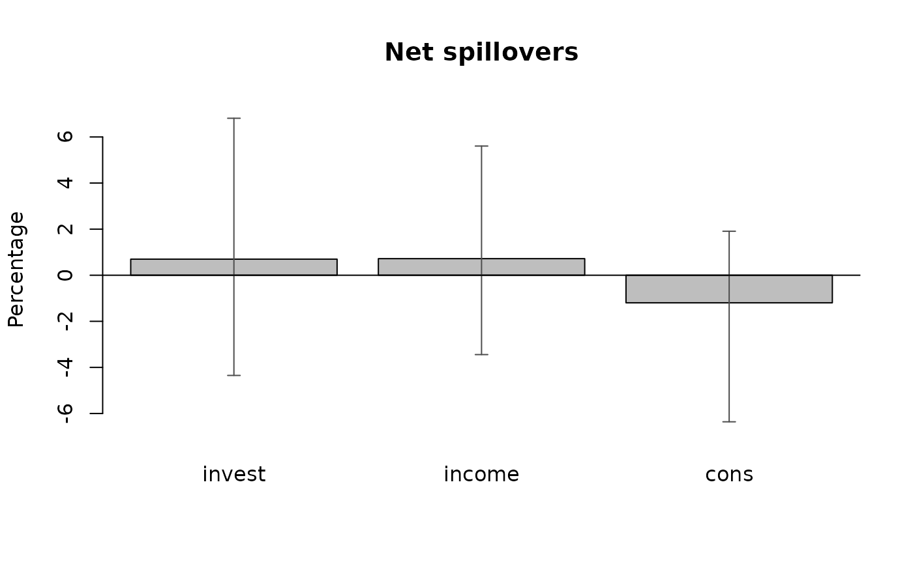

Produces the connectedness measures of Diebold and Yilmaz (2012) for an object of class 'bvarmodel'.
Usage
# S3 method for class 'bvarmodel'
spillover(
object,
n_ahead = 10,
type = "gir",
ci = 0.95,
keep_draws = FALSE,
period = NULL,
impact = NULL,
...
)Arguments
- object
an object of class 'bvarmodel'.
- n_ahead
the forecast horizon \(H\) of the decomposed forecast error variance, which is made of the impulse responses of periods 0 to \(H - 1\). Defaults to 10, the horizon of Diebold and Yilmaz (2012). The table therefore corresponds to the rows of period \(H - 1\) of
fevd, which counts its periods from the impact period.- type
type of the impulse responses the decomposition is based on. Possible choices are generalised
gir(default), orthogonalisedoir, sign restrictedsignandcustom. All four decompose the reduced form of the model, so a structural model is not supported. See 'Details'.- ci
a numeric between 0 and 1 specifying the probability mass covered by the credible intervals. Defaults to 0.95.
- keep_draws
logical specifying whether the function should return all draws of the indices. Defaults to
FALSE, so that the credible intervals are returned.- period
integer. Index of the period, for which the measures should be generated. Only used for TVP or SV models. Default is
NULL, so that the posterior draws of the last time period are used.- impact
the impact matrix of a
customdecomposition, either a single \(K \times K\) matrix that identifies every posterior draw the same way, or a list of such matrices with one entry per draw. Ignored for every other value oftype. See 'Details'.- ...
further arguments passed to or from other methods.
Value
An object of class 'bvarspillover', a list containing
- total
the total spillover index. The median and the bounds of the credible interval, or all draws if
keep_draws = TRUE.- to, from, net
the directional measures, one column per variable, in the same form.
- table
the posterior mean of the normalised decomposition table, in percent, with the
fromcolumn, thetorow and the total index in the corner attached, so it is \((k + 1) \times (k + 1)\).- pairwise
the posterior mean of the net pairwise spillovers.
- specification
a list recording
n_ahead,type,ci,period,kand the number of draws.
Details
The function produces the connectedness measures of Diebold and Yilmaz (2012) for the VAR model $$y_t = \sum_{i = 1}^{p} A_{i} y_{t-i} + u_t,$$ with \(u_t \sim N(0, \Sigma)\).
Let \(\theta_{jk}(H)\) be the share of the \(H\) step forecast error
variance of variable \(j\) that is attributed to a shock to variable
\(k\). Under type = "gir" this is the generalised decomposition of
Pesaran and Shin (1998),
$$\theta_{jk}(H) = \frac{\sigma^{-1}_{kk} \sum_{i = 0}^{H - 1} (e_j^{\prime} \Phi_i \Sigma e_k)^2}{\sum_{i = 0}^{H - 1} (e_j^{\prime} \Phi_i \Sigma \Phi_i^{\prime} e_j)},$$
where \(\Phi_i\) is the forecast error impulse response of period \(i\)
and \(\sigma_{kk}\) the variance of the shock variable. These shares
do not add up over \(k\), so each row is normalised,
$$\tilde{\theta}_{jk}(H) = \theta_{jk}(H) / \sum_{k} \theta_{jk}(H).$$
Under type = "oir" the decomposition uses the Choleski factor of
\(\Sigma\), adds up by construction and depends on the ordering of the
variables, which is what the generalised version of Diebold and Yilmaz (2012)
avoids. Under type = "sign" it uses the Choleski factor rotated by
what add_sign_restrictions accepted for that draw, leaving out
the draws no rotation was found for. Under type = "custom" it uses the
matrix supplied in argument
impact in place of that factor and is otherwise the orthogonalised
case, the scaling by \(\sigma^{-1}_{kk}\) included: an impact matrix
carries the scale of its own shocks in its columns. The row normalisation is
applied to all three, so it will produce shares that sum to one even from an
impact matrix that does not factorise \(\Sigma\) and is therefore not a
check that one does.
From the normalised table the measures are
totalthe total spillover index, \(100 \sum_{j \neq k} \tilde{\theta}_{jk} / k\), the share of forecast error variance across the system that comes from other variables.
fromspillovers received by each variable from all others, \(100 (1 - \tilde{\theta}_{jj}) / k\).
tospillovers transmitted by each variable to all others, \(100 \sum_{j \neq k} \tilde{\theta}_{jk} / k\) summed down column \(k\).
nettolessfrom. Positive values mark net transmitters of shocks and negative values net receivers.pairwisenet pairwise spillovers, \(100 (\tilde{\theta}_{kj} - \tilde{\theta}_{jk}) / k\).
Every measure is computed once per posterior draw and only then summarised. That is not interchangeable with computing it from the posterior mean table: the measures are ratios, so the index of the mean is not the mean of the index. It is also what gives the index a credible interval, which the original point estimate based version does not have.
Objects of class 'bvecmodel' have to be transformed with
vec_to_var first, as for fevd.
References
Diebold, F. X., & Yilmaz, K. (2012). Better to give than to receive: Predictive directional measurement of volatility spillovers. International Journal of Forecasting, 28(1), 57–66. doi:10.1016/j.ijforecast.2011.02.006
Diebold, F. X., & Yilmaz, K. (2014). On the network topology of variance decompositions: Measuring the connectedness of financial firms. Journal of Econometrics, 182(1), 119–134. doi:10.1016/j.jeconom.2014.04.012
Pesaran, H. H., & Shin, Y. (1998). Generalized impulse response analysis in linear multivariate models. Economics Letters, 58, 17–29. doi:10.1016/S0165-1765(97)00214-0
See also
Other post-estimation analysis:
add_sign_restrictions.bvarmodel(),
fevd.bvarmodel(),
fevd.bvecmodel(),
irf.bvarmodel(),
irf.bvecmodel(),
predict.bvarmodel(),
spillover.bvecmodel(),
vec_to_var.bvecmodel()
Examples
# Load data
data("e1")
e1 <- diff(log(e1)) * 100
e1 <- window(e1, end = c(1978, 4))
# Generate model data
model <- create_bvarmodel(e1, p = 2, deterministic = "const",
iterations = 100, burnin = 10)
# Chosen number of iterations and burnin should be much higher.
# Add prior specifications
model <- add_priors(model,
coef = list(v_i = 1, v_i_det = 1 / 10),
sigma = list(df = "k", scale = 1))
# Add initial values
model <- add_initial_values(model)
# Obtain posterior draws
object <- add_posterior_coefficients(model)
# Obtain the connectedness measures
sp <- spillover(object)
sp
#> Spillover index (Diebold and Yilmaz, 2012)
#>
#> Horizon: 10
#> Decomposition: generalised
#> Draws: 100
#>
#> invest income cons from
#> invest 82.2 6.6 11.2 5.9
#> income 8.3 66.6 25.1 11.1
#> cons 11.7 29.4 58.9 13.7
#> to 6.7 12.0 12.1 30.7
#>
#> Rows are responses, columns are shocks. The corner is the total index.
#> Means only; see $total, $from, $to and $net for credible intervals.
# Net directional spillovers
plot(sp)
